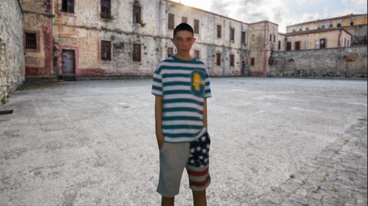
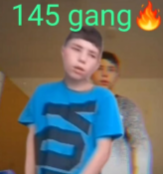
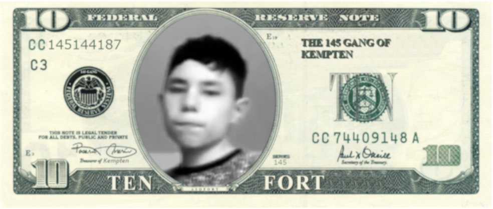
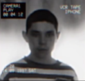
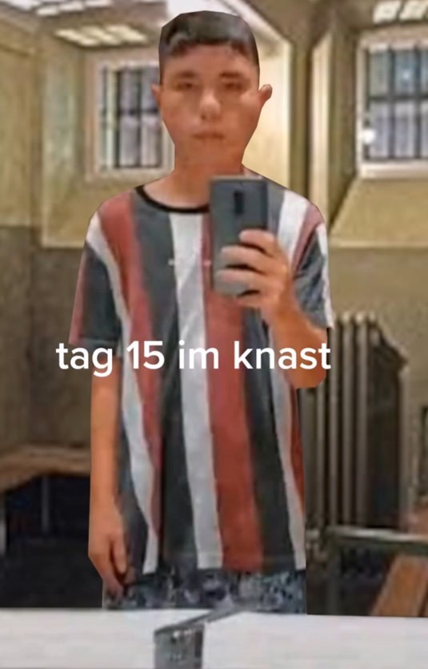

Die meisten Informationen über den Bekannten YouTuber/TikToker
Asamat Fort(Asofort) ist ein berühmter Influencer,
der Auf YouTube und TikTok millionen von Followern erreichte und mit Musik, Gaming und Reactions erfolgreich wurde.
Seine Musikart hing von Rap ab und es war beliebt in seiner Community.
Ein Song als Beispiel für seine Karriere: "Casino"
Eines seiner erfolgreichsten Songs, trägt den Titel "Casino".
Dieser Song geht um seine Spielsucht und er redet darüber, wie wichtig ihm das ist.
doch das war nicht sein ERFOLGREICHSTER Song...
Erfolgreichter Song: "Ich stehe um 7 Uhr auf"
Sein bisher erfolgreichster Song mit über 2 Millionen Aufrufen ist "Ich steh um 7 Uhr auf", wo er von seinem alltäglichem Leben erzählt, wo er um 7 Uhr aufsteht.
Im Jahr 2021 fingen die ersten Rückstände des Influencers an:
-Rücksichtslosigkeit
-aggression
-deprission
Er startete kurz darauf die Gründung der
sogenannten """145 gang"""
145 GANG
Die 145-Gang(Genannt auch: Asofort-Gang) ist eine von Asofort gegründete "Truppe", die sich in den Straßen Deutschlands befinden.
Wieso er diese Gang jedoch gründete ist bisher unbekannt.
vermutungen von befragten Personen wären z.B:
1: Einsamkeit
2: Angst
3: Wut
4: Verlust
5: Lust
Vor der 145-Gang gab es jedoch schon andere gangs, die Asofort gegründet hatte:
Gruselgang (Halloween 2021: noch beliebt aber wenig bekannt)
022 (mitte 2021: ohne Grund sehr unbeliebt)
144 (fast komplett unbekannt, da 145 eine Woche später gegründet wurde)
Fanart aus seiner Community:

Die 145-Gang ist so bekannt geworden da sie mit Gelddruck anfingen.
Am 8.10.2022 hatte Asamat Fort die Idee sein eigenes Geld zu drucken.
Er war seid seiner Kindheit von Gelddruck fasziniert und wollte dies nun selber ausprobieren.
Ten Fort Schein mit seinem Gesicht drauf:

Seiner Community hat es jedoch nicht gefallen, sobald er es veröffentlich hatte.
Asofort verlor Hunderttausende Follower und wurde sehr traurig.
Er hat seiner Community mitgeteilt, dass er diesen ständigen Druck nicht mehr aushällt und hat
alle seine Uploads auf jeder Social-Media Plattform gelöscht.
Darauf hin hat jemand die Polizei verständigt und Asofort des Gelddruckens verklagt.
Asamat Fort, Gründer der 145 gang, bekannter Influencer wurde für 6 Monate inhaftiert.
Die letzten veröffentlichten Bilder von Asofort vor der Haft:

Kurz nachden Asofort in haft ging, kam seine erste Veröffentlichung
auf dem TikTok Account
knast__vlogs_asamat
Wie und wieso er das gemacht hat ist bisher unbekannt.
Seine erste veröffentlichung nachdem er in Haft ging:

Auf seinem Profil kann man auch sehen,
dass er es versucht hat auszubrechen aber die Polizei ihn erwischte.
Eine verlängerung seiner Haft um weitere 6 Monate erfolgt.
Nach 1 Jahr Haft wurde asofort schließlich entlassen
und hat sich mit seinem verdientem Geld alles gekauft was er konnte.
Doch er hat seine Influencer-Karriere aufgegeben und führt nun ein eigenes Privates Leben.
Die 145 Gang gehört immernoch ihm und man sollte vorsichtig bleiben, Denn die Anhänger der 145-Gang machen heute noch die Straßen unsicher.